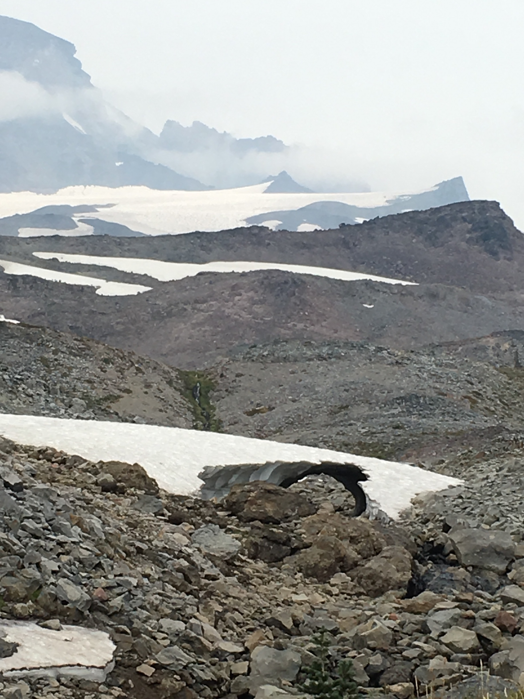

Saturday, Sep 16, 2017, 1:19 PM PDT
Henry M Jackson Memorial Visitor Center, Ashford, WA, United States
73°F Sunny
73°F Sunny
![]()
Justin, Nathan, Allison, Greg, Molli, and I hiked 4 miles in 2.5 hours, going up 147 floors of elevation, starting at the Paradise visitors center, to Myrtle Falls along the Skyline trail, and back on the Golden Gate trail.
Allison, Nathan, Justin, and Molli
